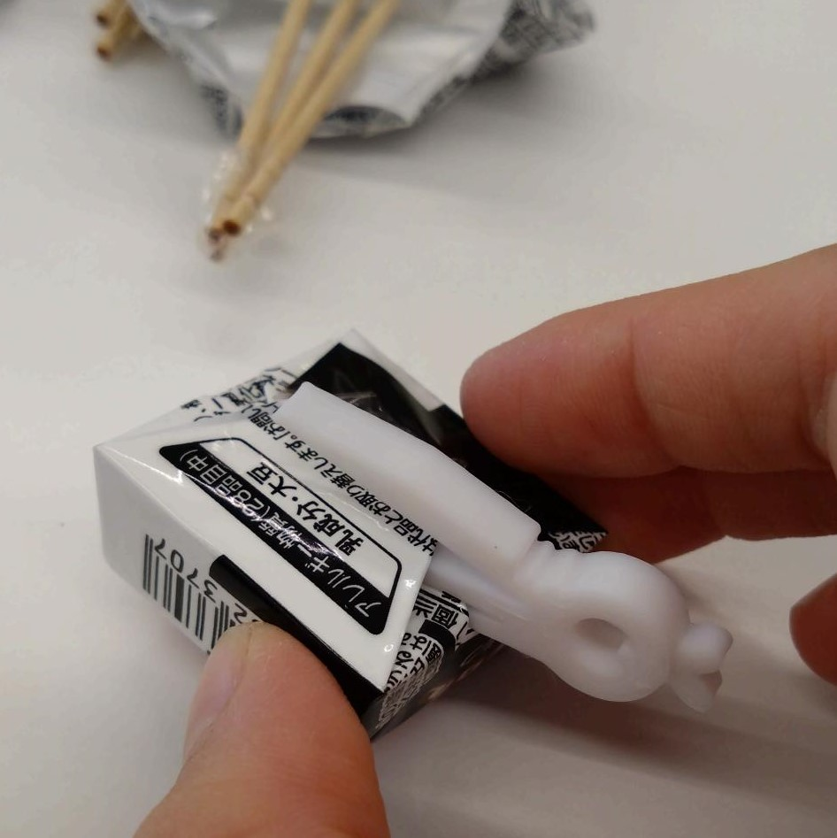
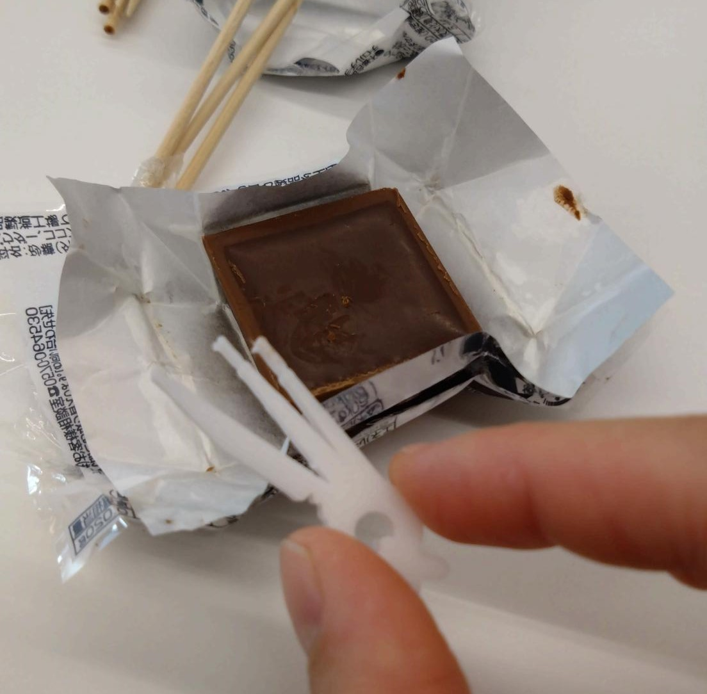
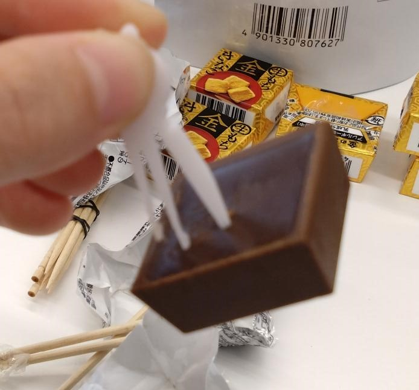
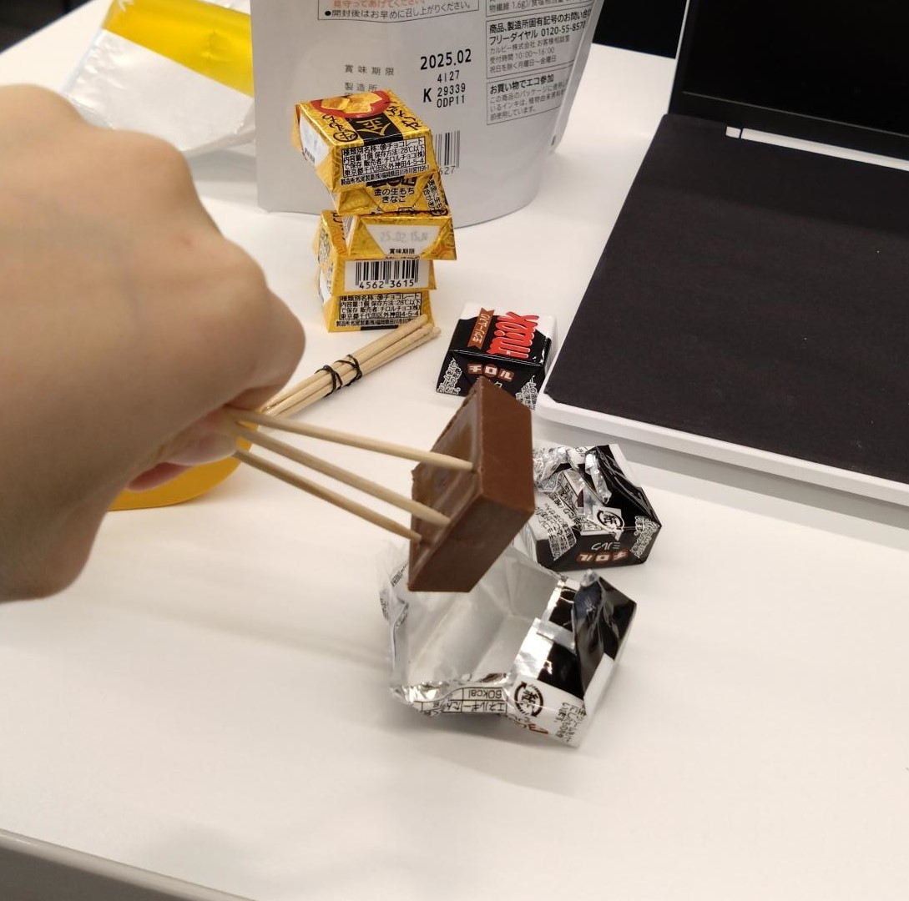
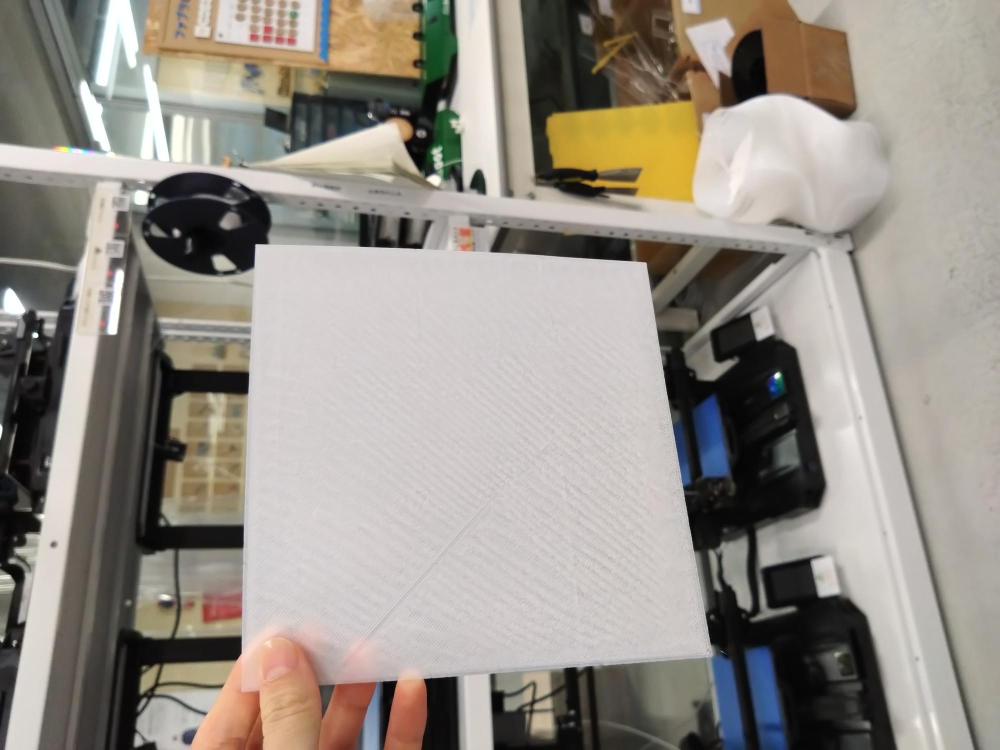
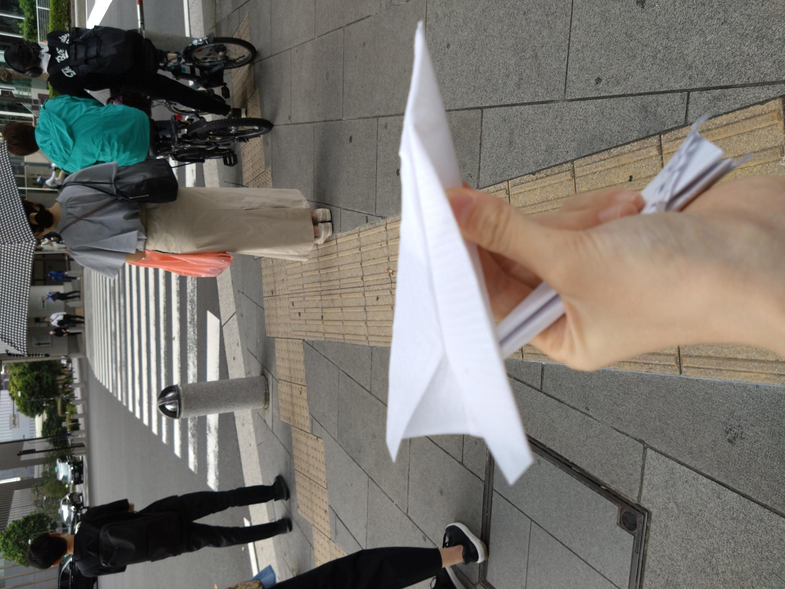

心を動かす何か

What is this?
これは「心」です。
これから「こころ」を使って心を動かしたいと思います。
実践
まず、一番オーソドックスな心の動かし方はこれです。

そう。心を車に乗せて動かします。
単純ですが、この方法を使えば誰でも心を動かすことができます。
この調子でドンドン心を動かしていこうと思います。
心が躍る

心を燃やす

心に刺さる

心に留める
心を打つ
心を鬼にする

このように、心を様々な方法で動かすことができました。
これに加えて、皆さんの感情が少しでも動いたのならこの発明は真価を発揮します。
少しでも良いと思って頂けたら幸いです。
なぜこれを作ったのか
桃太郎と鬼がいつ現れるかわからないから。
構成段階の色々
スケッチもしましたが、正直よくわからなかったので、爪楊枝で立体スケッチしました。

また、元々は先端などをこの爪楊枝ぐらい細くしていましたが、3Dプリンターの一番細いのが思ったより太かったので、太らせました。
3Dプリンターは細かな造形に向かないです。
stlファイル
ピンセット
弱点
・使い捨て
・小さいから失くす
・そもそもの話、大正には既に炭治郎が居たから鬼が絶滅危惧種に指定されている可能性がある
紙飛行機
紙飛行機を作りました。


が、上手くいかないので、先輩のアドバイスを参考に今度もう一回印刷します。
どこが上手くいかなかったのかの言語化は、後日やる気がある時にやります
～後日～
どこがダメだったのかというと、
・紙のように折り曲げることができない
・前側が重すぎる
の二点がダメでした。
今後改善していきたいです。
（でもそこから先は書いた所で友達以外見ないと思うので、多分ここには纏めません）
（見たかったら直接声掛けてください）